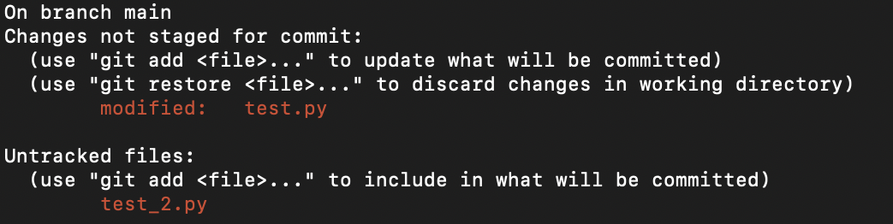
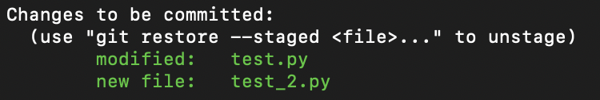
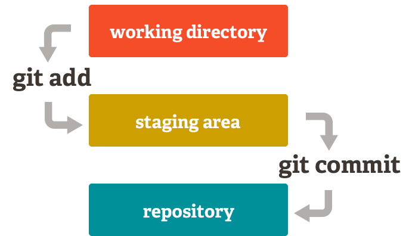
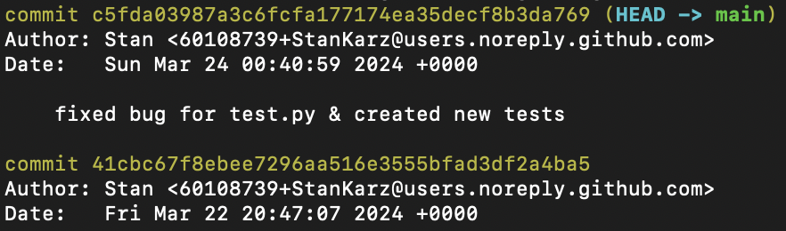

graph TD;
A[Create new branch] --> B[Switch to new branch];
B --> C[Make changes];
C --> D[Stage changes];
D --> E[Commit changes];
E --> F[Switch to main branch];
F --> G[Merge changes to main branch];
G --> H[Delete test/feature branch]
Git is a distributed VCS (version control system) that tracks changes made to files and directories, enabling users to record project changes and revert back to a specific version of tracked files at any given time. Since Git is mainly used via the command line interface, knowledge of the relevant commands is crucial for using Git effectively.
Git Basics
The very first thing you should do when you want to start tracking changes with Git is to initialise a Git repository in your project directory, using the command:
git initThis creates a new .git sub directory within your project directory. It’s essentially where all the relevant and necessary information is contained that Git needs to manage the revisions and history of your project, holding metadata and the object database.
Alternatively, if you would like to create a copy of an existing Git repository on your local machine, use:
git clone <repository_url>The repository url may look something like this: https://github.com/someUser/someRepo.git
With this command all the data from the source repository will be fetched, including previous and current versions of all files, the branches, tags, commit history and other repository meta data.
Note
The source repository is typically located on a local file system or on a remote server such as GitHub, BitBucket or GitLab
After cloning you will have a working copy of the latest project version allowing you to start making your own chabges. Luckily for us when using the clone command it automatically sets up a remote connection called origin, which points back to the source repo. This makes it easy to use future commands when you need to fetch or push data to and from the original repository.
Note
fetch and push are fundamental Git commands that allow us to download the latest changes from a remote repo to our local repo (fetching) and upload content from our local repo to the remote repo (pushing).
Once Git is setup for a project we need a way to display the state of the working directory in terms of what changes have been “staged”, which haven’t and which files are not being tracked by Git, this is done via the command:
git statusThe output of this command may look something like this:

The output is self explanatory and Git is telling us that:
- We are on the main branch
- Changes have been made to
test.py test_2.pyis currently not being tracked by Git
Files highlighted in red indicate that these have not been added to the staging area yet or are untracked.
Git’s staging area can be thought of as a rough draft space where you can organise and select all the files you want to be part of the next commit. For example, if you’ve made several changes across multiple files and you want to make multiple commits then you can stage the individual files and commit them in small chunks. This would make your commits more detailed and allow you to be more specific about what changes were made to the project.
To add files to the staging we use:
git add .This will add all the files and directories in the project folder to the staging area.
Alternatively you can specify which files should be added to the staging area using:
git add fileName1 fileName2
Note
In the interest of security, we want to avoid staging and committing sensitive information such as .env files which might include API keys, database passwords, secret tokens etc. These sensitive details don’t need to be pushed to a public or even a private repository where other team members or collaborators could inadvertently access them.
Once we have added the relevant files to the staging area, we can use git status again to see the update.

If you have accidentally added files to the staging area you can unstage them using:
git restore --staged fileNameor alternatively to unstage all files, use:
git resetAfter you have staged your files and you’re satisfied, the last thing to do is commit these changes using:
git commit -m "commit message"This tells Git to capture a snapshot of the project’s currently staged changes. The commit message typically describes what changes you made, this can be useful to track how your code has developed over time.

Another useful command is:
git logWhich allows us to view the commit history of a repository. It displays a list of commits, starting with the most recent, along with detailed information about each commit. This information typically includes the commit hash (a unique identifier for each commit), the author, the date of the commit, and the commit message.
Here’s an example output:

Working with Branches
One of Git’s most popular features is it’s straightforward branching model, effectively enabling multiple streams of work to proceed independently from each other before they are eventually merged back into a main line of development (usually the main branch). By default we are working and making changes to files on the main branch but this isn’t always a good idea. If we were working on a separate feature or a bug fix we can create a new branch for these changes. Essentially, this prevents our potentially unstable code to affect and disrupt the entire main code base. This is especially important when you’re working in teams and need to thoroughly clean up and test code before merging it into the main branch.
We can list all the branches for our repo, along with the current branch we are working on, highlighted with an asterisk and green text, using:
git branchTo create a new branch run:
git checkout -b branch_nameThis will also switch to the newly created branch, switching between branches is also simple and can be done with either:
git checkout branch_namegit switch branch_nameOnce we are on our newly created branch we can safely make changes without worrying about breaking the code in the main branch. At some point when you’re satisfied with the changes made on the newly created branch, you will most likely want to merge them with main codebase. To do so, first switch to main branch and run:
git merge branch_nameTo delete a branch, use:
git branch -d branch_name
Note
Deleting a branch after merging it with the main branch is optional but recommended for cleanliness and manageability because it can help avoid clutter as more branches are created and merged, reduce confusion when multiple branches are active and encourages a tidy repository where only active development is front and centre.
Since we are currently only working within our local repository the workflow would look like this:
Working with Remote Repos
When working in a team it’s common for the main codebase to be hosted on a remote server, with members cloning this repo onto their local machine, developing the code and then pushing their changes to the remote repository. For this workflow there will be a few added steps, namely cloning the remote repo, pushing the changes, pulling any changes made while you were working on your branch or local repo and creating a PR (pull request).
The workflow for this would be:
graph TD;
A[Clone remote repo] --> B[Switch to new branch];
B --> C[Make changes];
C --> D[Stage changes];
D --> E[Pull any changes from remote repo];
E --> F[Commit your changes];
F --> G[Switch to main branch];
G --> H[Merge changes into main branch];
H --> I[Create a PR]
I --> J[Delete test/feature branch];
The first added step is creating a copy of the remote repository, locally using git clone <repo_url>. After this we can continue as usual, until just before we commit our changes, at this point we use:
git pullThis command will fetch updates from the remote repository and merge them into your local repository. This is crucial for avoiding merge conflicts, as someone may have pushed their own changes, whilst you were still working on your own local version which would would no longer be up to date if you don’t use the pull command.
A merge conflict occurs in Git when two separate branches have made different changes to the same line(s) of code in a file, and Git is unable to automatically merge these changes when attempting to combine the branches. When you try to merge one branch into another Git will attempt to automatically merge the changes from both branches. However, if Git detects that the same lines of code have been modified differently in both branches, it will not be able to determine which change should take precedence, resulting in a merge conflict.
In this situation, Git will pause the merge process and mark the conflicted files. You’ll need to manually resolve the conflicts by editing the files and deciding which changes to keep or how to combine the conflicting changes.
Git will mark the conflicting sections in the files with special markers, like this:
<<<<<<< HEAD
# Code from the current branch
=======
# Code from the branch being merged
>>>>>>> other-branch
Note
Merge conflicts are a normal part of the Git workflow, especially when multiple people are working on the same codebase or when a branch has diverged significantly from the main branch. Resolving conflicts manually ensures that your code remains consistent and that unintended changes are not introduced during the merge process.
The last thing left to do after successfully merging is to create a PR, which is simply a way to propose your changes to the main codebase. It allows others to review your code, provide feedback, and eventually merge your branch into the main branch.